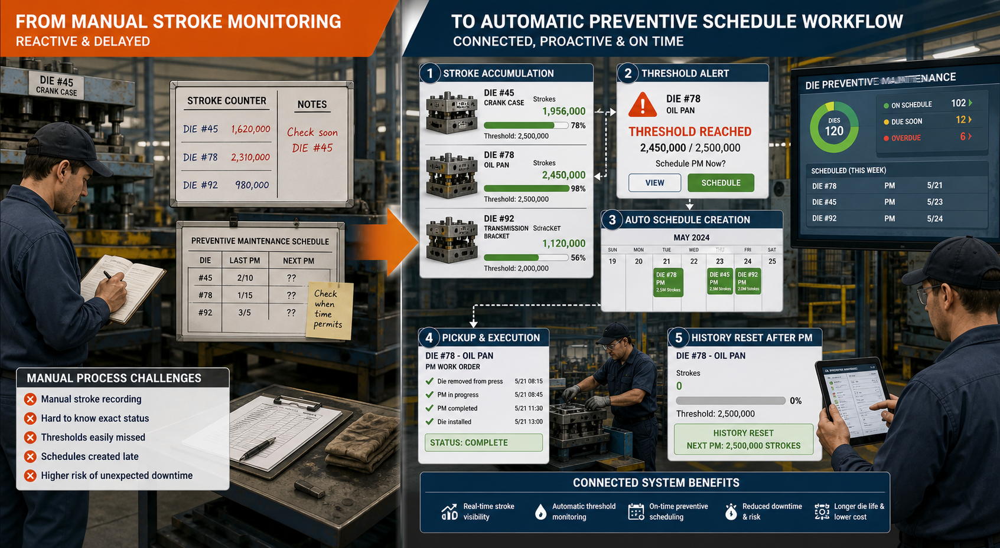

Maintenance System
Automatic Preventive Dies Maintenance
Preventive maintenance workflow for dies scheduling, threshold tracking, and maintenance follow-up visibility.
Workflow Illustration

This preventive flow is centered on dies threshold visibility. Instead of relying on manual stroke notes and delayed schedule decisions, the workflow connects stroke accumulation, threshold alerting, preventive scheduling, execution status, and history reset so maintenance can be handled more consistently.
Business Problem
Preventive maintenance schedules are easy to miss when stroke status and schedule timing are tracked manually across disconnected records.
My Role & Ownership
Independently built the application flow for maintenance scheduling, threshold-oriented monitoring, status records, and operator-facing visibility in a lightweight internal platform.
Operational Flow
- Dies stroke or usage progress is reviewed against preventive thresholds.
- Preventive schedules are prepared once threshold conditions indicate upcoming maintenance need.
- Pickup and execution status help teams monitor what is pending, ongoing, or completed.
- History tracking provides reference for the next preventive cycle.
Key Capabilities
- Preventive schedule visibility for dies maintenance.
- Threshold and status-oriented maintenance tracking.
- Operator-facing workflow for execution follow-up.
- Maintenance history and completion reference.
Tech Stack
PHP, MySQL, Tailwind CSS, jQuery.
Current Status
Status: Internal maintenance workflow focused on preventive schedule visibility, threshold tracking, and follow-up consistency for dies handling.


Internal process workflow with portfolio-safe screenshots.